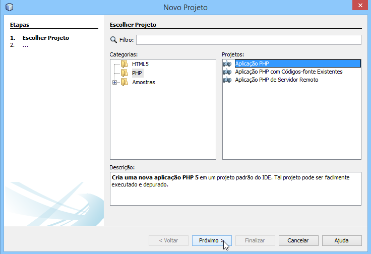

Para trabalhar com PHP é preciso, basicamente, de um software Servidor, do PHP (binários) e de um editor de texto ou um IDE(será explicado posteriormente). O Servidor mais utilizado no mundo para PHP é o Apache Server.
Curiosidade: Um servidor Web que vem ganhando muito espaço pela sua rapidez e menor consumo de recursos é o NGINX.
A função de um servidor é intermediar as transferências de dados entre o cliente (navegador) e servidor, via HTTP (Protocolo de Transferência de Hipertexto), o protocolo de comunicação da Web. O protocolo HTTP será detalhado adiante. Configurar um ambiente para trabalhar com PHP é muito simples graças ao Xampp, que instala e pré-configura o servidor Apache e o PHP (além de outras ferramentas úteis que serão apresentadas nos próximos módulos ao tratar de bancos de dados). Xampp O Xampp possui versão para Windows, Linux e Mac-OS. Para baixá-lo para Windows, acesse: https://www.apachefriends.org/download.html Faça download da versão referente ao PHP 5.6:
Para instalá-lo é simples, basta avançar todas as etapas do Setup.
Avance e mantenha o diretório padrão de instalação:
Avance:
Avance:
Finalize a instalação:

O painel do Xampp será aberto:
Inicie o Apache:

Em caso de sucesso o módulo do Apache terá seu fundo colorido na cor verde:
Sempre que você reiniciar ou ligar o seu computador e que for utilizar o ambiente do servidor Web, será necessário executar esse processo de iniciar o Apache.
Para finalizar as etapas, acesse: C:\xampp\htdocs e remova todos os arquivos:
Dentro da pasta htdocs ficam os scripts PHP. Ela é a pasta “root” (principal) do servidor Apache.
Para desenvolver os scripts PHP não é preciso nenhum programa em particular. Você pode escrevê-los usando seu editor de texto preferido, ou até o NotePad do Windows. Entretanto, para uma melhor experiência de desenvolvimento e organização dos exemplos, neste curso será usado o NetBeans, que possui uma versão exclusiva para PHP. O NetBeans é OpenSource e não há restrições quanto ao seu uso.
Para rodar o Netbeans em seu computador é necessário ter instalado o JDK, caso ao executar o arquivo de instalação do Netbeans você seja comunicado sobre não ter uma versão do Java, acesse e baixe-o usando o link: http://www.oracle.com/technetwork/java/javase/downloads/index.html
Faça o download da última versão disponível do NetBeans, acessando: http://netbeans.org/downloads/ você pode escolher entre x86 ou x64 baseado na versão do Windows instalada na sua máquina.
A instalação do NetBeans não exige nenhuma série complicada de passos. Basta clicar em Próximo, aceitar os termos e condições, clicar em Próximo duas vezes seguidas e depois iniciar a instalação, clicando em Instalar. Depois de instalado, clique no menu Arquivo e na opção Novo Projeto:
Selecione PHP e Aplicação PHP. Clique em Próximo:
Defina o nome do projeto como “treinaweb”, certifique-se de que o campo “Pasta de Fonte” tenha o endereço “C:\xampp\htdocs\treinaweb” e marque a Versão do PHP como “PHP 5.6”:
Use sempre a Codificação Default como UTF-8 e sem BOM, para que não tenhamos problemas de caracteres inválidos causando erros de script no PHP
Clique em “Finalizar”. Uma pasta chamada “treinaweb” foi criada dentro de “C:\xampp\htdocs” e, dentro dela, foi criado um arquivo chamado index.php.